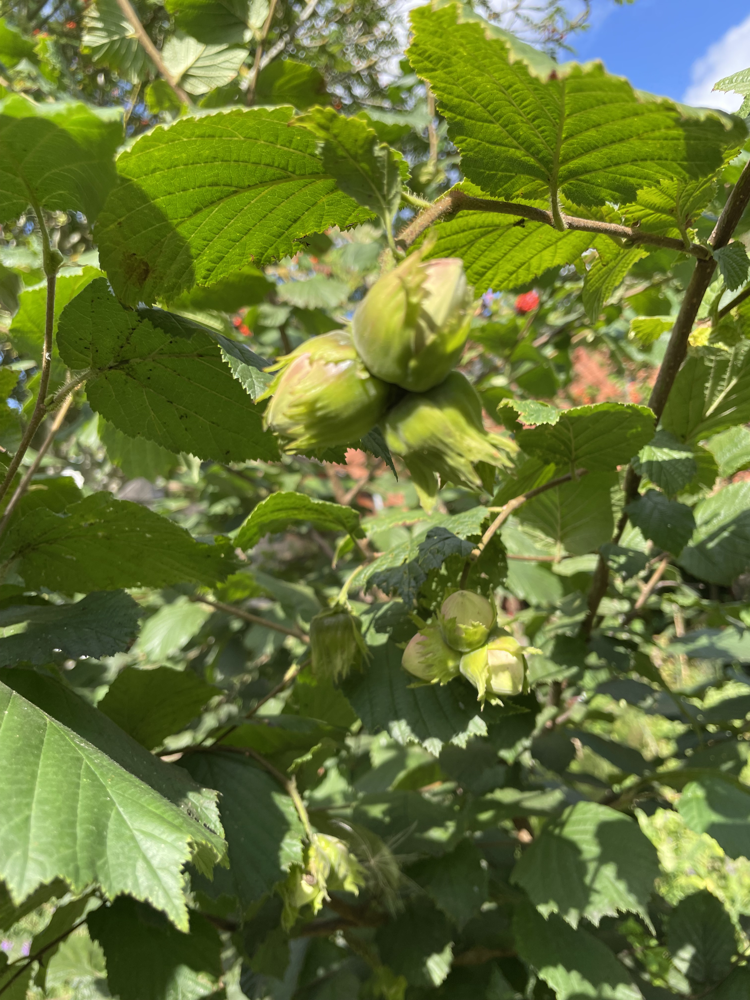
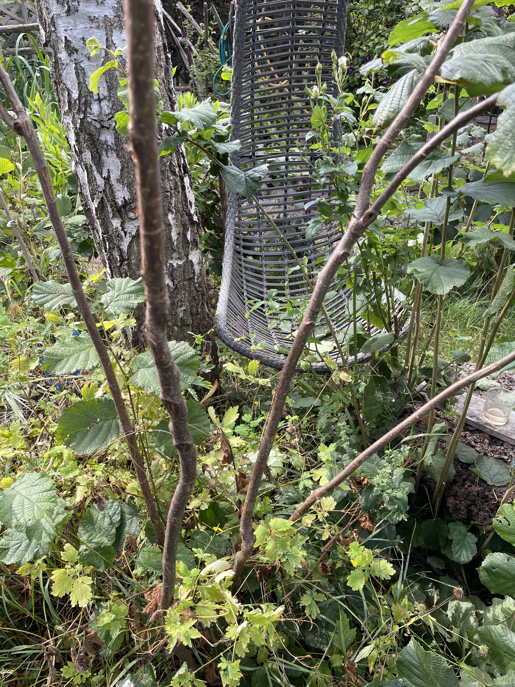
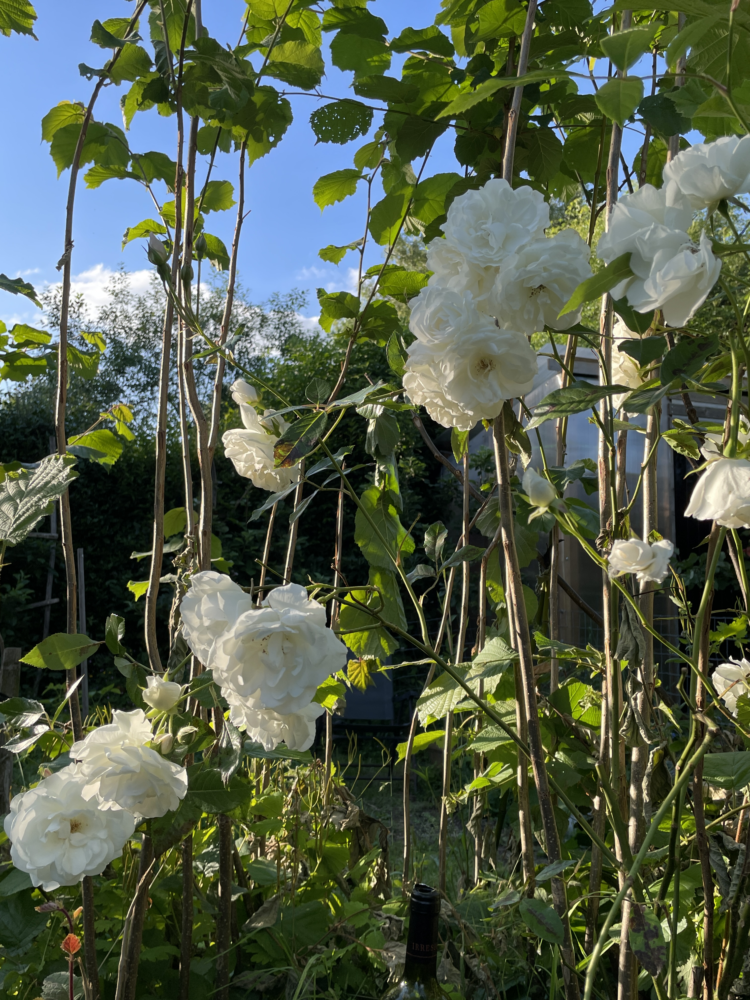
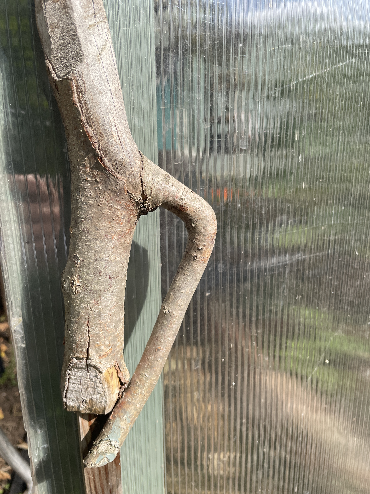
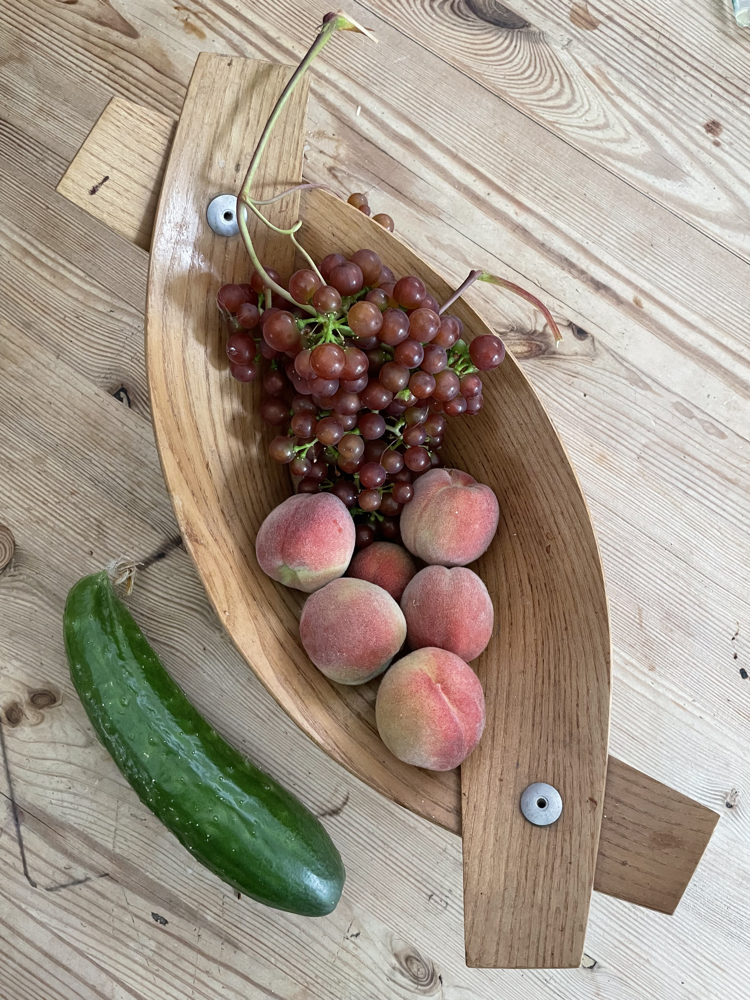
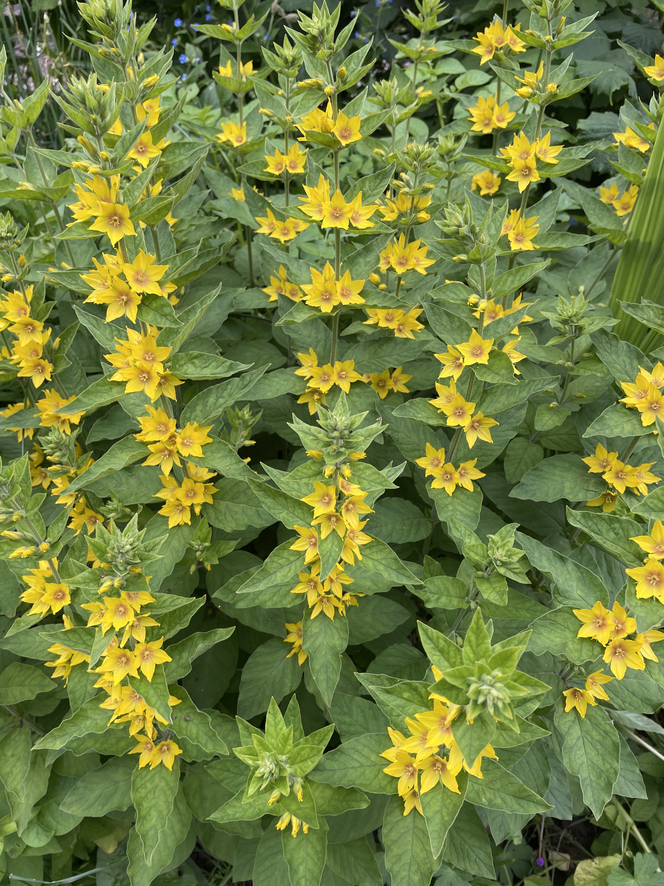
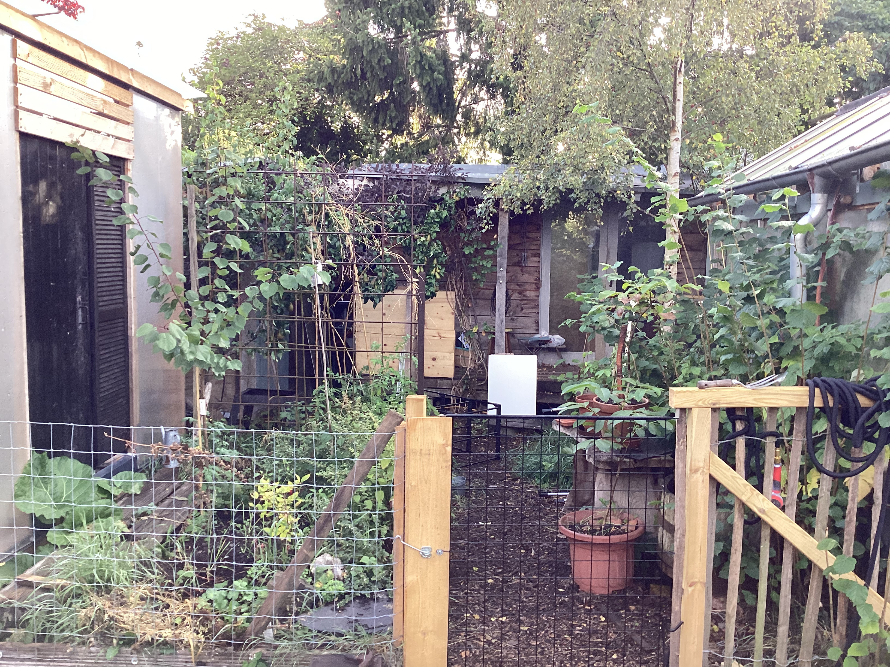

Grove Cottage Garden
Grove Cottage Garden is a thriving example of forest garden design, demonstrating how a residential garden can be transformed into a multi-layered, productive and biodiverse greenspace. The garden incorporates a wide range of fruit trees, shrubs, herbs, and wildlife features, creating a resilient and ecologically rich environment.

Garden Gallery











Key Features
- Multi-layered forest garden structure (canopy, shrub, ground layers)
- Diverse fruit and nut trees: apples, pears, figs, hazel, peaches, plums
- Wildlife habitat features: bird boxes, hedgehog gaps, clay bee hotel, wildlife pond
- Productive kitchen garden with vegetables, herbs, and soft fruits
- Composting and closed-loop soil management
- Climbing plants and vertical layers: grapevine, honeysuckle, jasmine, passion flower
- Native and wildlife-friendly planting throughout
- Dog-free zone to protect vulnerable ground-nesting wildlife